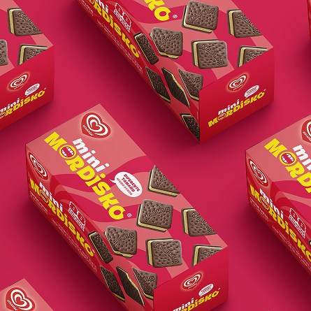
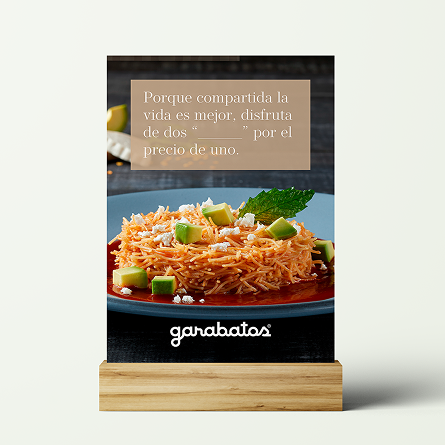
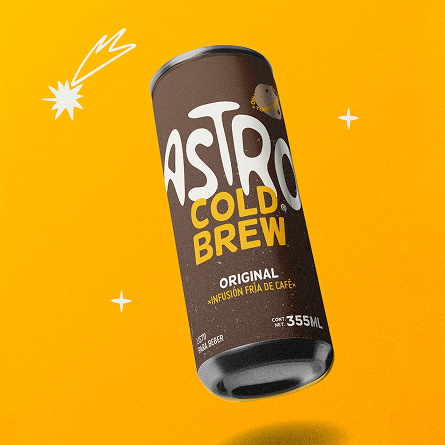
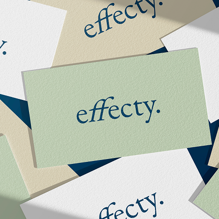
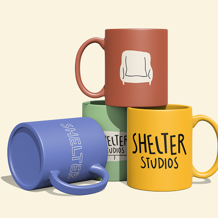
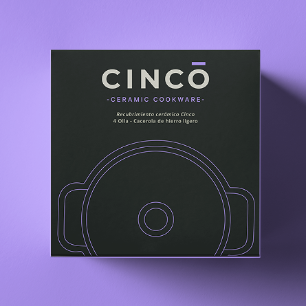

I’m a designer who wraps around what you’re buildingand stays right beside you as you grow.






A few of my clients- Raina Kattelson, Señor Mango, Effecty, Siete Machos, Tom Kubik, Mordisko, Aromandia, Shelter Studios, Nopalogy